◆活動舉辦期間◆ 2018年9月5日(三) 17:00～9月19日(三) 11:59
◆活動概要◆
舉辦Fate/Zero×Fate/Grand Order特別活動「復刻版:Fate/Accel Zero Order -LAP_2-」！
送上「Fate/Zero」的原作者虚淵玄親自執筆的原創劇情，以第四次聖杯戰爭當時的冬木市做為舞台的故事。
與諸葛孔明〔埃爾梅羅II世〕一同挑戰解開另一個第四次聖杯戰爭之謎吧！
※本活動為再調整2016年舉辦的Fate/Zero×Fate/Grand Order特別活動「Fate/Accel Zero Order」更容易遊玩的「復刻版活動」。
※一部份的關卡為日後開放。
※在上次舉辦時獲得過「聖杯」的情況，於「復刻版活動」會以「傳承結晶」代替「聖杯」做為任務報酬。
◆活動參加條件◆
只限通過「特異點F 炎上汙染都市 冬木」的Master才能參加
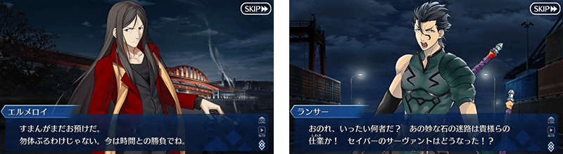
在Fate/Grand Order官方網站內首頁及Gallery，公開特別活動「復刻版:Fate/Accel Zero Order -LAP_2-」的電視廣告。敬請確認。
動畫製作：ufotable
「復刻版:Fate/Accel Zero Order -LAP_2-」中，進行主線關卡後會發生達成「收集特定的道具一定數以上」「擊倒特定的敵人」等各式各樣條件的話，可獲得豪華報酬的任務！
另外，對應任務的達成狀況，會開放新的關卡和任務。
攻略任務，獲得達成報酬並推進主線關卡吧！
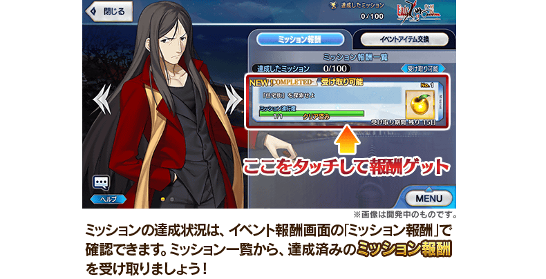
※請注意只滿足通過條件無法入手報酬。
※請注意未領取任務報酬的話，不會開放新的任務和地點。
◆關於透過關鍵道具開放自由關卡◆
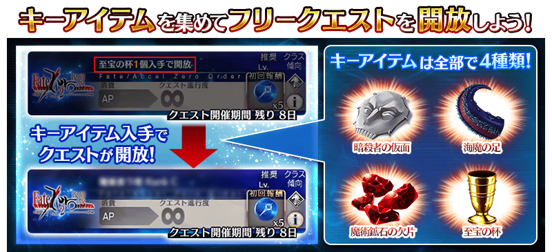
做為任務對象的自由關卡，除了可靠主線關卡的通過和任務的達成來開放外，也會有「關鍵道具的獲得」條件。
關鍵道具有「暗殺者的假面」「海魔之足」「魔術礦石的碎片」「至寶之杯」4種，能靠主線關卡的報酬和任務的報酬、活動専用道具的交換等入手。
開放所需的關鍵道具因關卡而異，各自獲得一定數後，就會開放新的自由關卡。

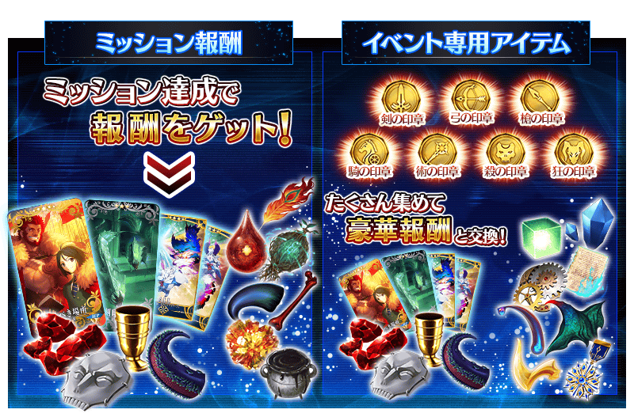

◆超值攻略方法・其1◆
將對象Servant編入隊伍的話，在「復刻版:Fate/Accel Zero Order -LAP_2-」的活動關卡中會提升一部份職階印章的掉落獲得數。
提升掉落獲得數的印章以職階決定，在關卡通過時會提升「各職階的對峙職階印章」的掉落獲得數。
關於提升掉落獲得數的印章種類，請確認下述表格。
※Berserker職階Servant會提升狂之印章的掉落獲得數。
※請注意各關卡的道具掉落率並非100％。
※自9月3日(一) 17:00，在Servant選擇畫面和Servant強化畫面等中，追加「下次活動對象」篩選器。
由於是只顯示於下個舉辦活動活躍Servant的便利功能，敬請活用。
【活動對象Servant與提升掉落獲得數的印章種類】
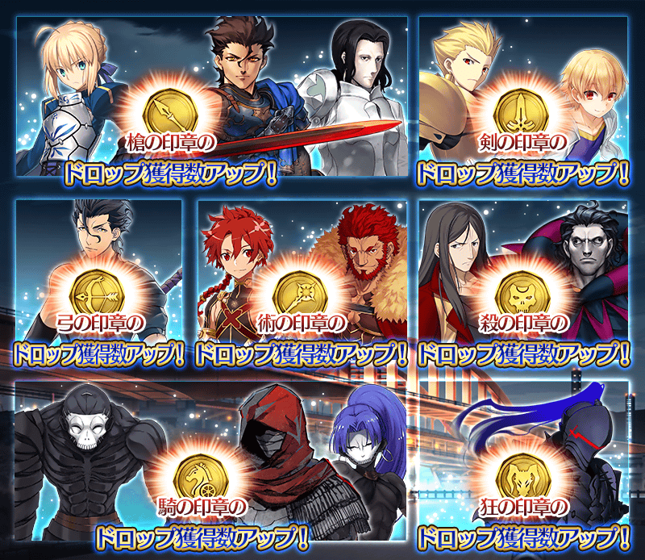
| 職階 | 稀有度 | Servant名 | 提升掉落獲得數 的印章種類 |
|---|---|---|---|
| Saber | ★★★★★ | 阿爾托莉亞・潘德拉剛 | |
| ★★★★ | 迪爾姆德・奧德利暗 | ||
| ★★★ | 吉爾・德・雷 | ||
| Archer | ★★★★★ | 吉爾伽美什 | 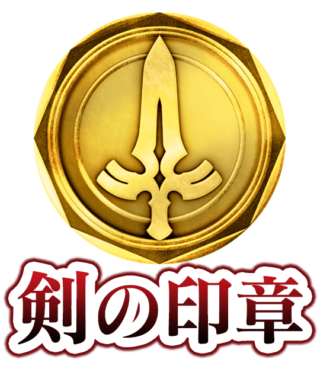 |
| ★★★ | 子吉爾 | ||
| Lancer | ★★★ | 迪爾姆德・奧德利暗 |
 |
| Rider | ★★★★★ | 伊斯坎達爾 | |
| ★★★ | 亞歷山大 | ||
| Caster | ★★★★★ | 諸葛孔明〔埃爾梅羅II世〕 | |
| ★★★ | 吉爾・德・雷 | ||
| Assassin | ★★★★ | Emiya〔Assassin〕 | |
| ★★★ | 百貌的哈桑 | ||
| ★★ | 咒腕的哈桑 | ||
| Berserker | ★★★★ | 蘭斯洛特 | 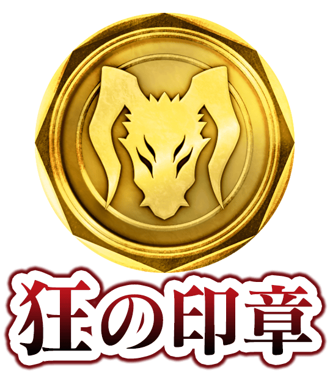 |
◆超值攻略方法・其2◆
裝備可在活動道具交換入手的活動限定概念禮裝「至るべき場所」的話，在「復刻版:Fate/Accel Zero Order -LAP_2-」中會提升全職階印章的掉落獲得數。
※請注意各關卡的道具掉落率並非100％。
◆超值攻略方法・其3◆
裝備在聖晶石召喚Pick Up的概念禮裝「目醒め前」「月霊髄液」「恋知らぬ令嬢」「セルフ・ギアス・スクロール」的話，在「復刻版:Fate/Accel Zero Order -LAP_2-」中，會提升一部份職階印章的掉落獲得數。
提升掉落獲得數的印章是以裝備概念禮裝Servant的職階決定，在關卡通過時會提升「各職階的對峙職階印章」的掉落獲得數。
關於提升掉落獲得數的印章種類，請確認下述表格。
※Berserker職階Servant裝備的情況，會提升狂之印章的掉落獲得數。
※Extra職階的Servant裝備的情況，會提升複數職階印章的掉落獲得數。提升掉落獲得數的印章種類各職階有所差異。
※請注意各關卡的道具掉落率並非100％。
※各概念禮裝的增加量有所差異。
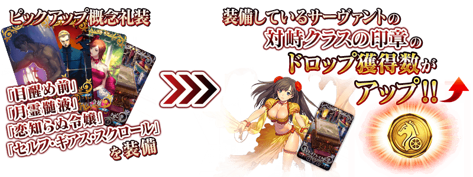
【在裝備Pick Up概念禮裝時提升掉落獲得數的印章】
| 職階 | 提升掉落獲得數的印章種類 |
|---|---|
| Saber | |
| Archer | |
| Lancer |
|
| Rider | |
| Caster | |
| Assassin | |
| Berserker | |
| Ruler |
|
| Avenger | |
| Alterego | |
| MoonCancer |
|
| Foreigner |
|
| Shielder | 全職階的印章 |

◆活動限定概念禮裝◆
 |
★★★★★SSR |
◆得到活動限定概念禮裝經驗值卡「刻印虫」吧！◆
做為活動限定的報酬，可入手能大幅強化概念禮裝大幅的EXP卡！ |

|

活動専用道具可自點擊管理室(ターミナル)畫面右上「活動報酬」的「活動道具交換」畫面，交換以下的道具。
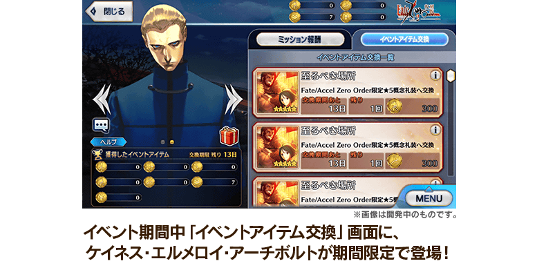
◆交換期間◆
2018年9月5日(三) 17:00～9月26日(三) 11:59
【9月5日(三) 17:00追記】
確認到會有在活動道具交換一覧顯示的關鍵道具除外道具的交換期間，沒有上述至9月26日(三)剩餘天數，而是顯示做為活動結束期間至9月19日(三)剩餘天數的問題。
※「暗殺者的假面」「海魔之足」「魔術礦石的碎片」「至寶之杯」在2018年9月19日(三) 11:59結束交換期間。
※在2018年9月26日(三) 11:59各種「印章」「暗殺者的假面」「海魔之足」「魔術礦石的碎片」「至寶之杯」會消失。
※英靈結晶・流星之芙芙ALL★4(HP)、英靈結晶・日輪之芙芙ALL★4(ATK)的交換會在通過「復刻版:Fate/Accel Zero Order -LAP_2-」主線關卡後開放
◆能用劍之印章交換的道具◆
 |
【技能強化＆靈基再臨素材】 【靈基再臨素材】 【其他道具】 |
◆能用弓之印章交換的道具◆
 |
【技能強化＆靈基再臨素材】 【靈基再臨素材】 【其他道具】 |
◆能用槍之印章交換的道具◆
|
【技能強化＆靈基再臨素材】 【靈基再臨素材】 【其他道具】 |
◆能用騎之印章交換的道具◆
|
【活動限定概念禮裝】 【靈基再臨素材】 【其他道具】 |
◆能用術之印章交換的道具◆
|
【活動限定概念禮裝】 【靈基再臨素材】 【其他道具】 |
◆能用殺之印章交換的道具◆
 |
【活動限定概念禮裝】 【靈基再臨素材】 【其他道具】 |
◆能用狂之印章交換的道具◆
|
【活動限定概念禮裝】 【靈基再臨素材】 【其他道具】 |
【9月12日(三) 17:00追記】
以通過「復刻版:Fate/Accel Zero Order -LAP_2-」所有任務、特定關卡及「終局特異點」的Master做為對象，開放高難易度的「挑戰關卡」。
「挑戰關卡」就算通過後也不會消失，能無數次挑戰，可以變更Servant和概念禮裝的組合後再次挑戰。
※關卡通過報酬、戰利品、Master經驗值、魔術禮裝經驗值、絆點數只可在初次通過時獲得。
◆挑戰關卡開放時間◆
2018年9月12日(三) 17:00～
◆挑戰關卡參加條件◆
只限通過「復刻版:Fate/Accel Zero Order -LAP_2-」所有任務、特定關卡及「終局特異點」的Master才能參加
◆挑戰關卡初次通過報酬◆
傳承結晶 1個
◆「復刻 Fate/Accel Zero Order Pick Up召喚(每日交替)」期間◆
期間:2018年9月5日(三) 17:00～9月19日(三) 11:59
舉辦期間限定「復刻 Fate/Accel Zero Order Pick Up召喚(每日交替)」！
變更在2016年舉辦的「Fate/Accel Zero Order Pick Up召喚」一部份內容進行復刻。
「★5(SSR)伊斯坎達爾」以期間限定登場！
並且，「★4(SR)迪爾姆德・奧德利暗(Saber)」新登場！
本次包含上述Pick Up9位Servant！
「★5(SSR)阿爾托莉亞・潘德拉剛(Saber)」「★5(SSR)伊斯坎達爾」「★5(SSR)諸葛孔明〔埃爾梅羅II世〕」「★4(SR)Emiya〔Assassin〕」「★4(SR)蘭斯洛特(Berserker)」以每日交替Pick Up，「★4(SR)迪爾姆德・奧德利暗(Saber)」「★3(R)迪爾姆德・奧德利暗(Lancer)」「★3(R)吉爾・德・雷(Caster)」「★3(R)百貌的哈桑」常駐Pick Up！
詳情請在聖晶石召喚畫面左下的召喚詳細確認。
另外，概念禮裝「★5(SSR)目醒め前」「★5(SSR)月霊髄液」「★4(SR)恋知らぬ令嬢」「★3(R)セルフ・ギアス・スクロール」也常駐Pick Up！
裝備上述4種概念禮裝的話，在特別活動「復刻版:Fate/Accel Zero Order -LAP_2-」中會提升活動専用道具的掉落獲得數。
◆有關Servant的注意◆
※伊斯坎達爾在Pick Up期間結束後不會追加到故事召喚。
※迪爾姆德・奧德利暗(Saber)在Pick Up期間結束後會追加到故事召喚。
※請注意「復刻 Fate/Accel Zero Order Pick Up召喚(每日交替)」做為每日交替，伊斯坎達爾就算是Pick Up期間中也有不會被抽出的日子。
※Pick Up期間中，吉爾・德・雷(Caster)就算通過第一特異點前也能入手。
※阿爾托莉亞・潘德拉剛(Saber)、諸葛孔明〔埃爾梅羅II世〕、Emiya〔Assassin〕、蘭斯洛特(Berserker)、迪爾姆德・奧德利暗(Lancer)、吉爾・德・雷(Caster)、百貌的哈桑在Pick Up期間結束後仍會在故事召喚被抽出。
◆有關概念禮裝的注意◆
※目醒め前、月霊髄液、恋知らぬ令嬢在Pick Up期間結束後仍會在故事召喚被抽出。
※セルフ・ギアス・スクロール就算是Pick Up期間中，也能在友情點數召喚被抽出。
※セルフ・ギアス・スクロール不會從故事召喚被抽出。
※請注意自友情點數召喚抽出セルフ・ギアス・スクロール在自動變還設定登錄★3(R)概念禮裝的情況，會變成自動變還的對象。
Pick Up期間中，期間限定Servant、Pick Up Servant、新登場Servant、Pick Up概念禮裝的出現機率提升！
10次召喚中確定1張★4(SR)以上和確定1位★3(R)以上的Servant！
※確定★4(SR)以上包含Servant和概念禮裝。
| 每日交替Pick Up期間 | 每日交替Pick Up內容 |
|---|---|
| 9月5日(三) 17:00～ 9月7日(五) 22:59 |
伊斯坎達爾 迪爾姆德・奧德利暗(Saber) Emiya〔Assassin〕 蘭斯洛特(Berserker) |
| 9月7日(五) 23:00～9月8日(六) 22:59 | 伊斯坎達爾 迪爾姆德・奧德利暗(Saber) |
| 9月8日(六) 23:00～9月9日(日) 22:59 | 伊斯坎達爾 迪爾姆德・奧德利暗(Saber) Emiya〔Assassin〕 |
| 9月9日(日) 23:00～9月10日(一) 22:59 | 伊斯坎達爾 迪爾姆德・奧德利暗(Saber) 蘭斯洛特(Berserker) |
| 9月10日(一) 23:00～9月11日(二) 22:59 | 伊斯坎達爾 諸葛孔明〔埃爾梅羅II世〕 迪爾姆德・奧德利暗(Saber) Emiya〔Assassin〕 蘭斯洛特(Berserker) |
| 9月11日(二) 23:00～9月12日(三) 22:59 | 諸葛孔明〔埃爾梅羅II世〕 迪爾姆德・奧德利暗(Saber) |
| 9月12日(三) 23:00～9月13日(四) 22:59 | 阿爾托莉亞・潘德拉剛(Saber) 伊斯坎達爾 迪爾姆德・奧德利暗(Saber) Emiya〔Assassin〕 蘭斯洛特(Berserker) |
| 9月13日(四) 23:00～9月14日(五) 22:59 | 阿爾托莉亞・潘德拉剛(Saber) 迪爾姆德・奧德利暗(Saber) |
| 9月14日(五) 23:00～9月15日(六) 22:59 | 伊斯坎達爾 迪爾姆德・奧德利暗(Saber) |
| 9月15日(六) 23:00～9月16日(日) 22:59 | 伊斯坎達爾 迪爾姆德・奧德利暗(Saber) Emiya〔Assassin〕 |
| 9月16日(日) 23:00～9月17日(一) 22:59 | 伊斯坎達爾 迪爾姆德・奧德利暗(Saber) 蘭斯洛特(Berserker) |
| 9月17日(一) 23:00～ 9月19日(三) 11:59 |
伊斯坎達爾 迪爾姆德・奧德利暗(Saber) Emiya〔Assassin〕 蘭斯洛特(Berserker) |
※請注意會以每日交替變更Pick Up的Servant。
以期間限定舉辦迪爾姆德・奧德利暗(Saber)的體驗關卡！
可迎接「★4(SR)迪爾姆德・奧德利暗(Saber)」做為支援成員，挑戰期間限定的關卡！
別錯過體驗Servant技能和寶具的機會！
※請注意迪爾姆德・奧德利暗(Saber)體驗關卡沒有冒險部份。
|
◆迪爾姆德・奧德利暗(Saber)體驗關卡舉辦期間◆ ◆開放條件◆ ◆關卡通過報酬◆ |
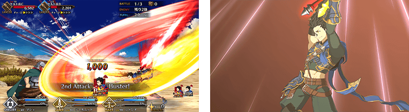
開放迪爾姆德・奧德利暗(Saber)的幕間物語！
◆開放時間◆
2018年9月5日(三) 17:00～
◆關卡開放條件◆
章節通過:通過亞種特異點Ⅲ
再臨階段:2階段目
絆Lv:無條件
◆關卡通過報酬◆
聖晶石 1個
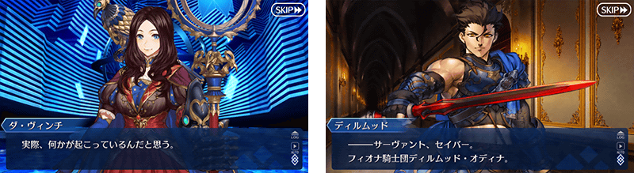
翻新在「Fate/Zero」活躍的「★5(SSR)伊斯坎達爾」戰鬥動作及寶具演出！
另外，在「Fate/Grand Order」官方網站內的公告中，公開了「★5(SSR)伊斯坎達爾」的寶具演出。敬請確認。
◆翻新時間◆
2018年9月5日(三) 17:00～
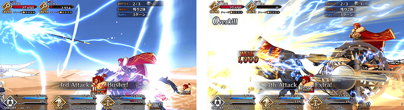
【9月9日(日) 23:00追記】
翻新在「Fate/Zero」活躍的「★4(SR)蘭斯洛特(Berserker)」戰鬥動作及寶具演出！
另外，在「Fate/Grand Order」官方網站內的公告中，公開了「★4(SR)蘭斯洛特(Berserker)」的寶具演出。敬請確認。
◆翻新時間◆
2018年9月9日(日) 23:00～
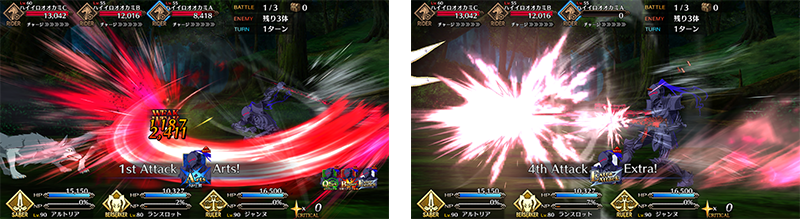


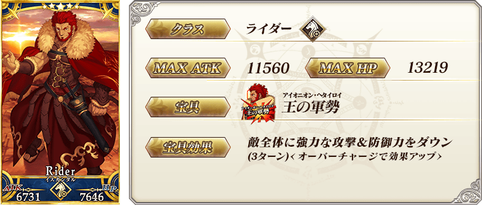
※上述「★5(SSR)伊斯坎達爾」的卡面為靈基再臨第2階段的圖片。
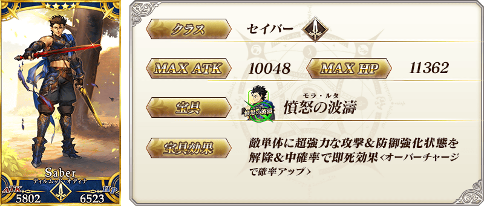
※上述「★4(SR)迪爾姆德・奧德利暗(Saber)」的卡面為靈基再臨第2階段的圖片。


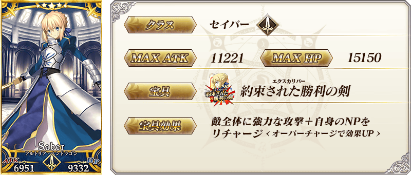
※上述「★5(SSR)阿爾托莉亞・潘德拉剛(Saber)」的卡面為靈基再臨第2階段的圖片。

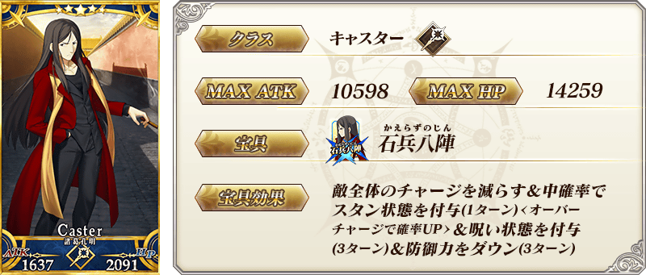

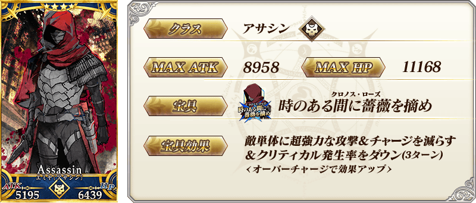
※上述「★4(SR)Emiya〔Assassin〕」的卡面為靈基再臨第2階段的圖片。

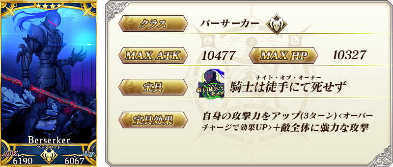
※上述「★4(SR)蘭斯洛特(Berserker)」的卡面為靈基再臨第2階段的圖片。
※9/9(日) 23:00圖片修正

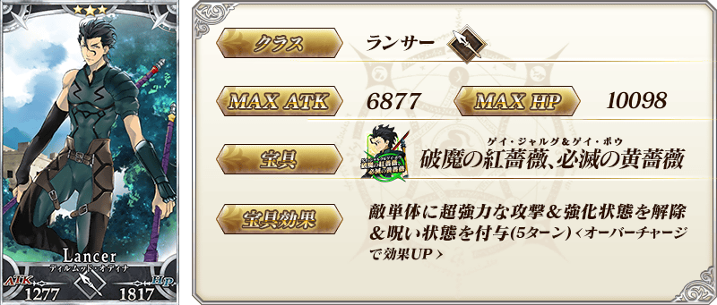


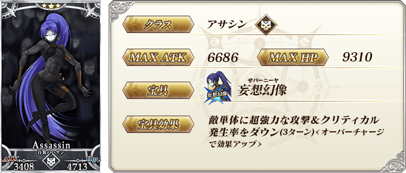
※上述「★3(R)百貌的哈桑」的卡面為靈基再臨第2階段的圖片。
 |
★★★★★SSR |
 |
★★★★★SSR |
 |
★★★★SR |
 |
★★★R |

※上述「★5(SSR)伊斯坎達爾」的立繪為靈基再臨第2階段。
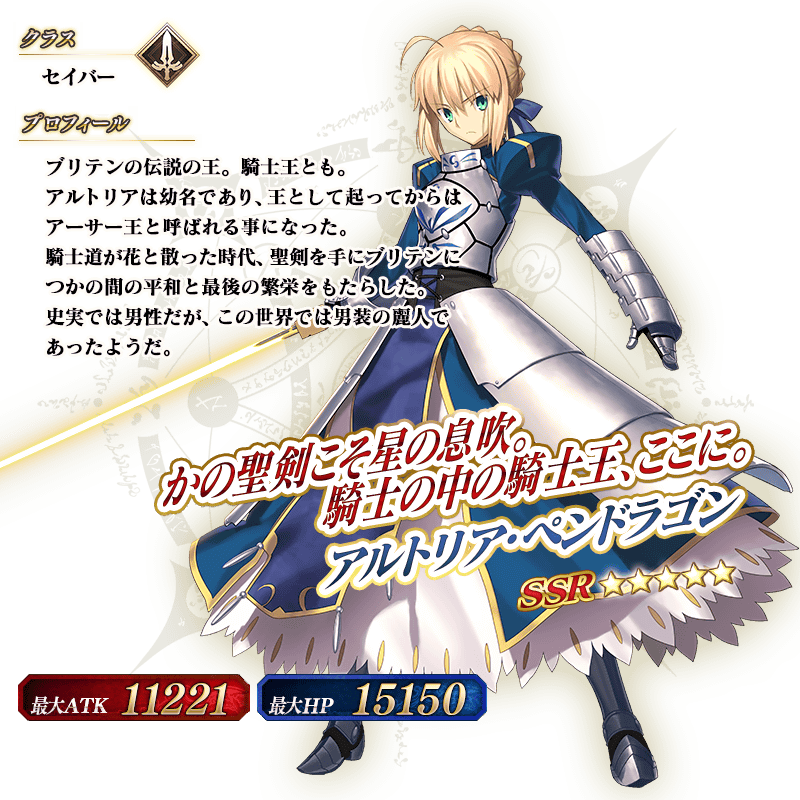
※上述「★5(SSR)阿爾托莉亞・潘德拉剛(Saber)」的立繪為靈基再臨第2階段。
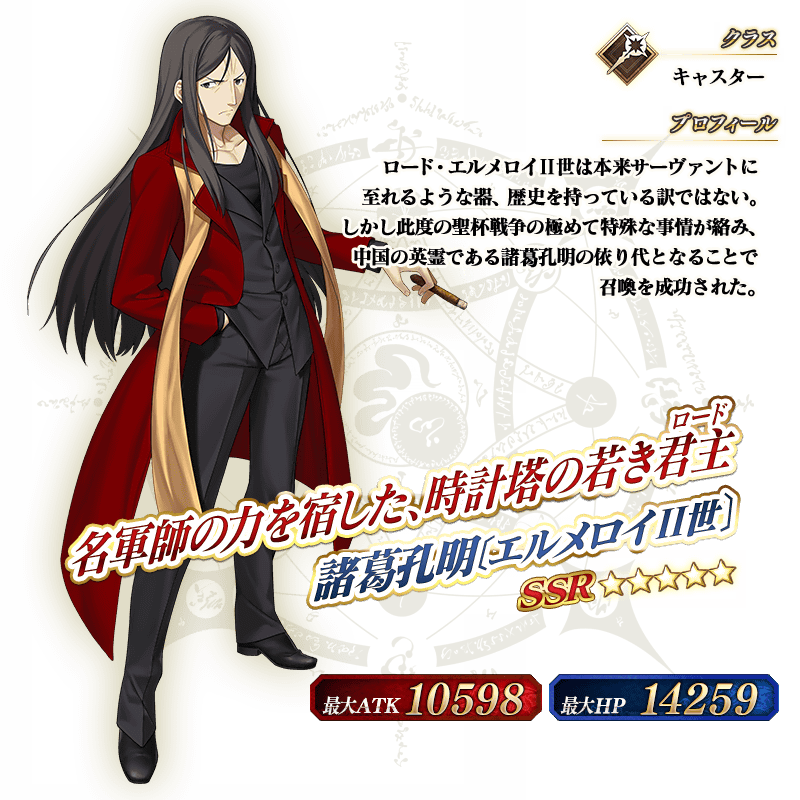
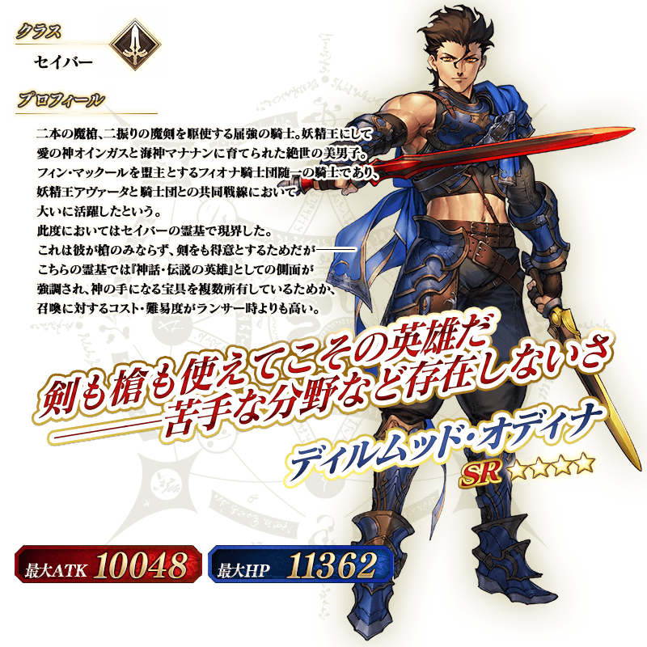
※上述「★4(SR)迪爾姆德・奧德利暗(Saber)」的立繪為靈基再臨第2階段。
介紹迪爾姆德・奧德利暗(Saber)的寶具演出！
在「Fate/Grand Order」官方網站內的公告中，公開了「★4(SR)迪爾姆德・奧德利暗(Saber)」的寶具演出。敬請確認。
介紹阿爾托莉亞・潘德拉剛(Saber)、諸葛孔明〔埃爾梅羅II世〕的寶具演出！
在「Fate/Grand Order」官方網站內的公告中，公開了「★5(SSR)阿爾托莉亞・潘德拉剛(Saber)」「★5(SSR)諸葛孔明〔埃爾梅羅II世〕」的寶具演出。敬請確認。